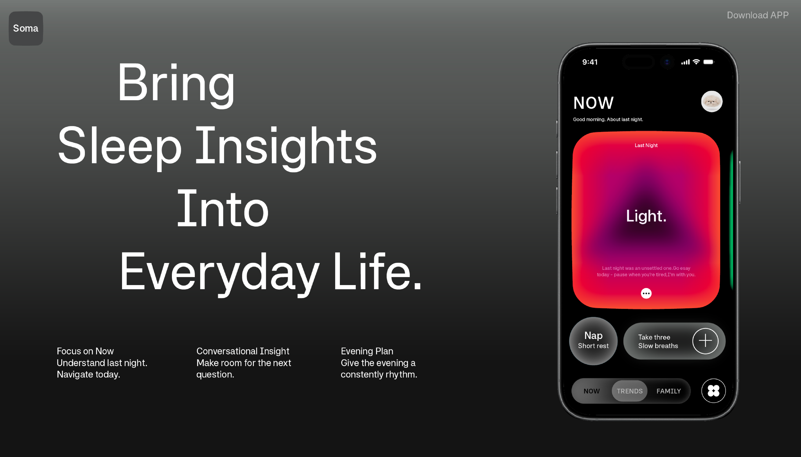
Soma APP
Will you continue to play table tennis when the rules of mathematics are overturned?We assume that it is meaningful to divide by zero and set 1/0= O. We will be 1/0= © Bring into the physical formula in the real world with “un-d detected” loopholes, and get the physical laws that subvert common sense.In order to reflect the changes in the physical laws mentioned above, we focus on the field of “Sports”. In the field of sports, we have chosen the largest and most far-reaching Olympic Games. The Olympics represents not only the sport itself, but also the human pursuit of “higher, faster and stronger”. The change of movement mode is a side description of the change of human behavior.When the same rule is overturned, mathematics, physics and physical education are intertwined and constantly deformed. In the world of science fiction, the design of “dividing by zero is meaningful”, is actually using the design to show “impossible”.
数学的规则被颠覆时,你还会继续打乒乓球吗?我们假设:除以零有意义,设1/0=Θ。我们将1/0=Θ带入“尚未发现”漏洞的现实世界中的物理公式，得到颠覆常识的物理规律。为了体现如上所述物理规律的改变,我们聚焦于“体育”领域。在体育领域,我们选择了规模最盛大、影响最深远的奥林匹克赛事。奥林匹克代表的不仅是体育本身，更是人类对“更高、更快、更强”的追求。运动方式的改变，是人类行为改变的侧面描写。数学、物理、体育,这三门学科在同一规则被颠覆时,互相交织、不断形变。在科幻世界里设计“除以零有意义”,实际上是在用设计展示“不可能”。
- Category
- Experimental
- Designer
- Chen Jiaqi
陈家琪 - Art Derector
- Xing Chen
邢晨 - Year
- 2026
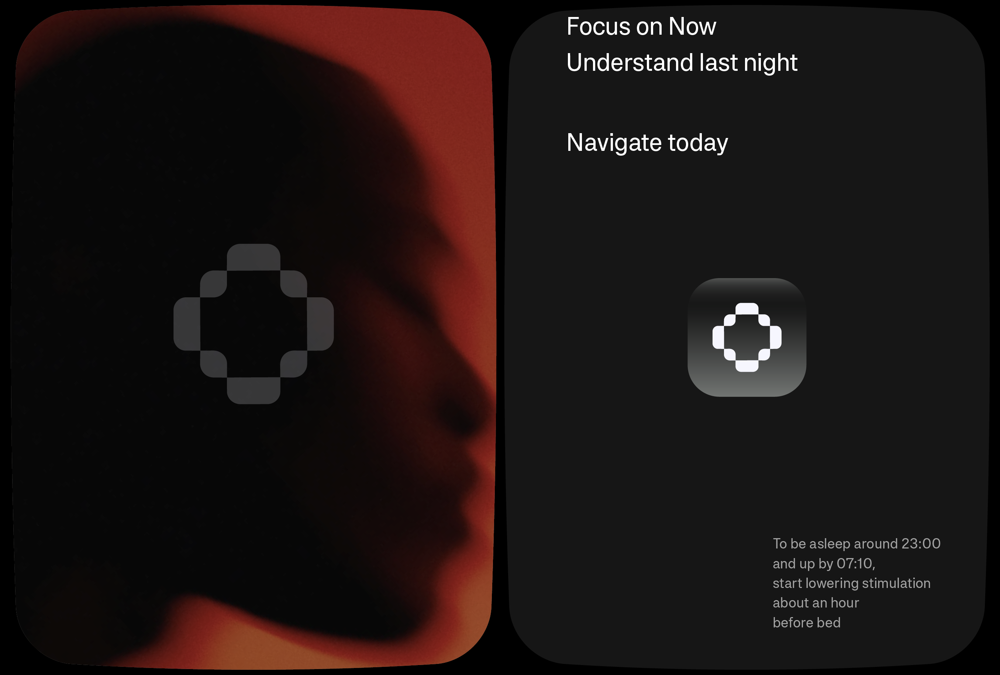
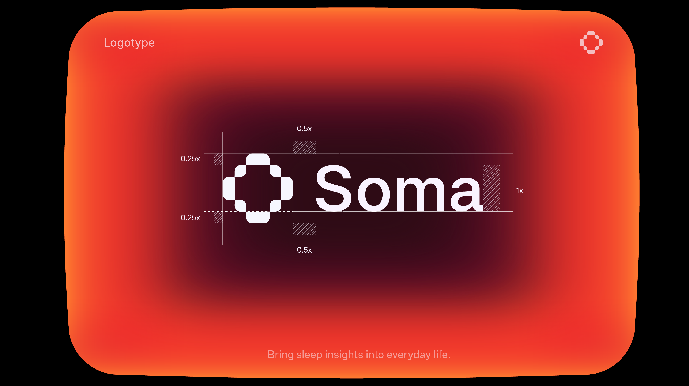
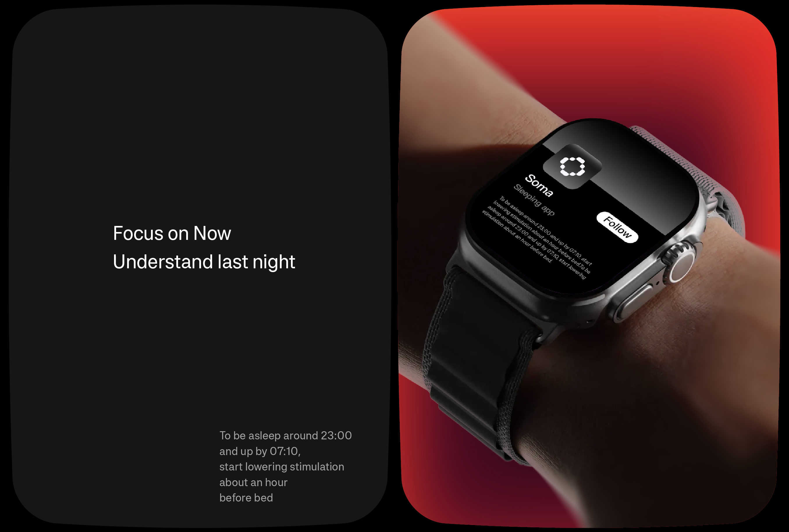
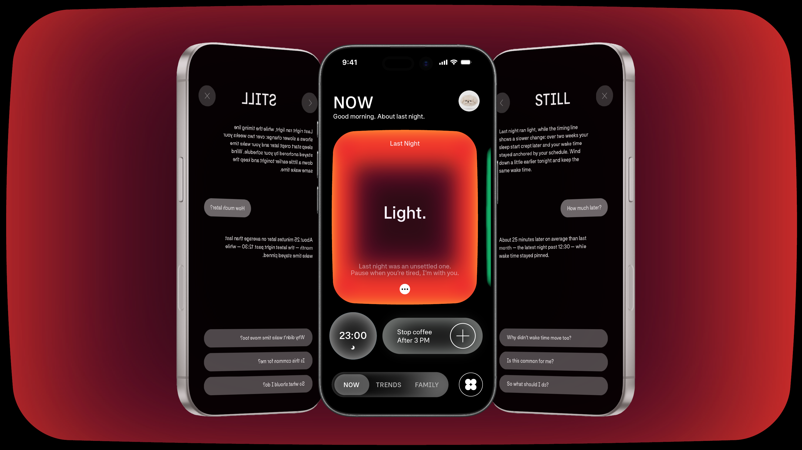
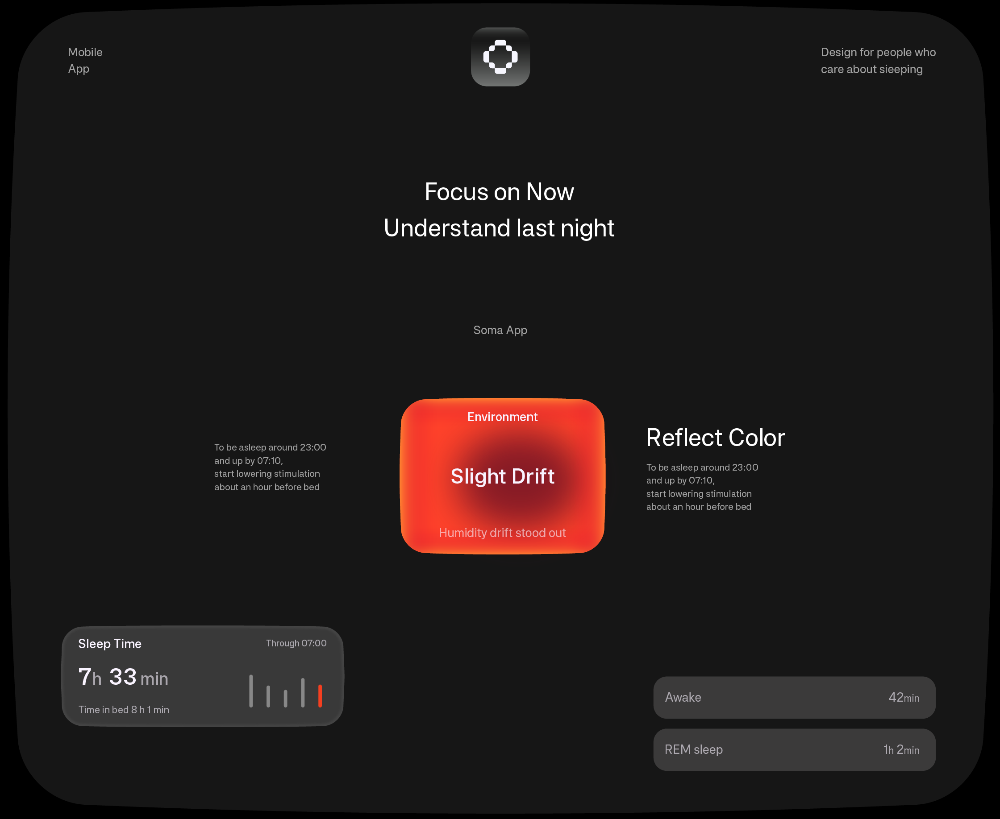
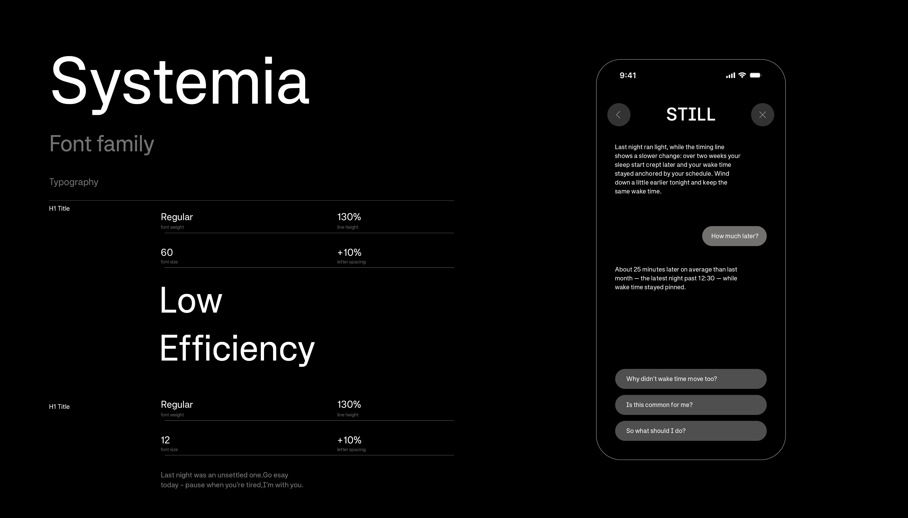
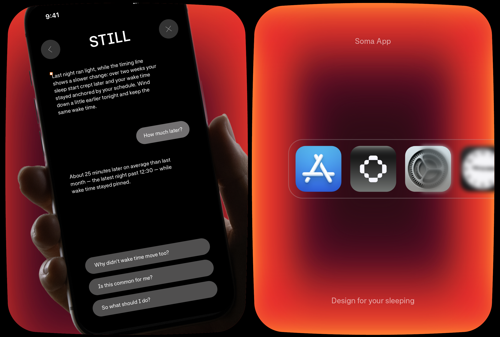
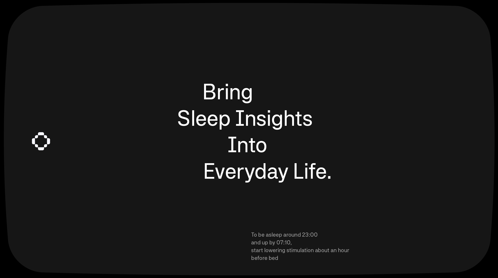
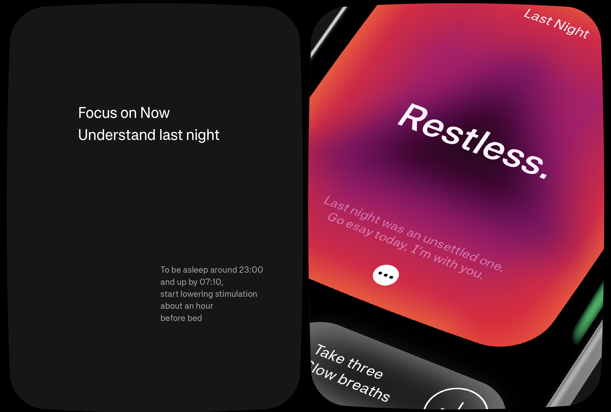
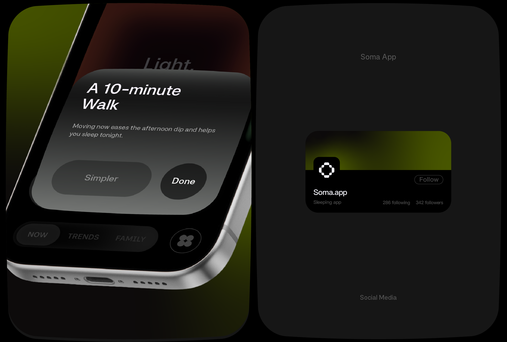
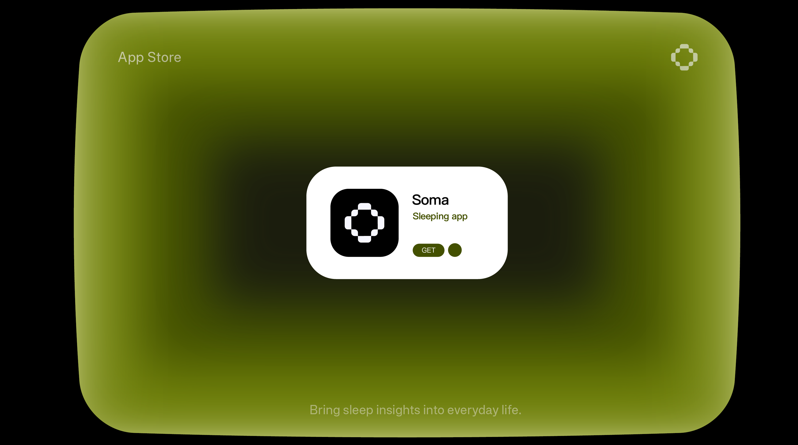
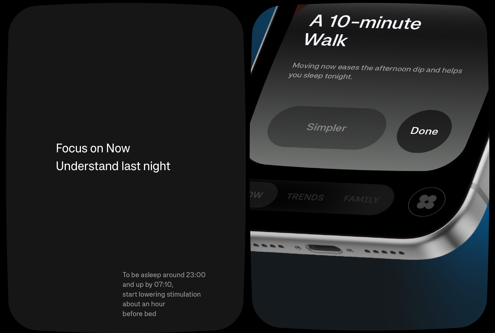
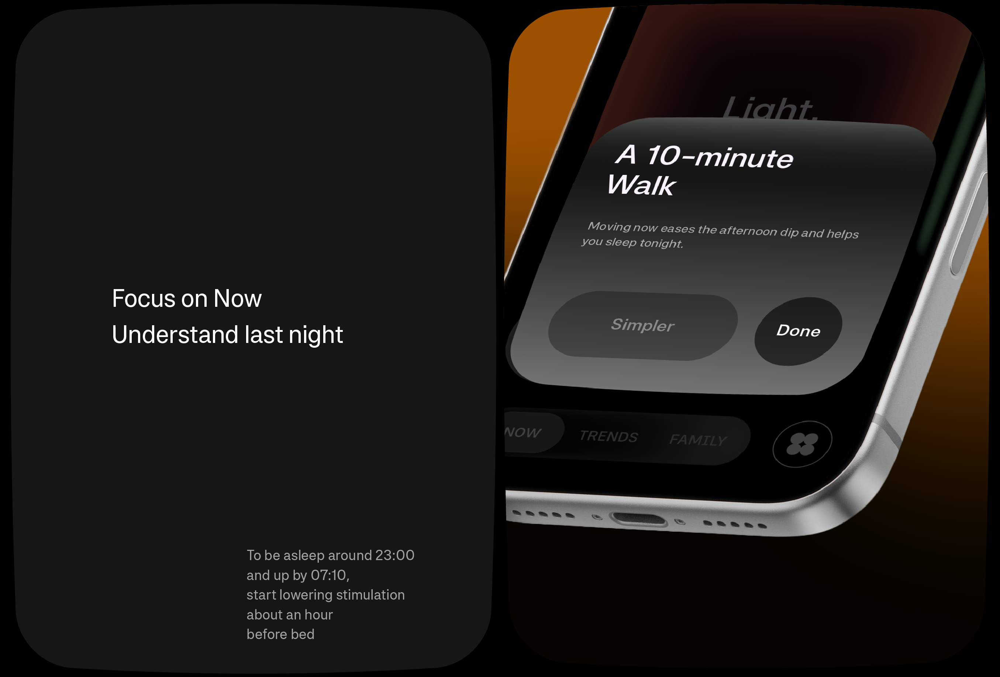